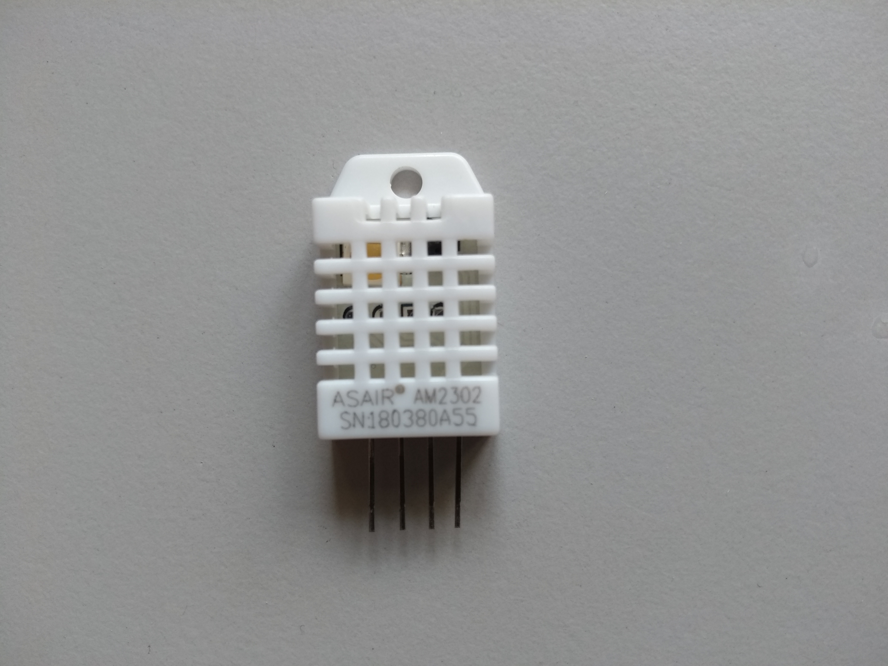

Here you will find some information on the different sensors we used in the implementation of the SensorBox. Of course, other sensors for measuring the same or even other environmental variables could be used as well. The listed sensors were chosen due to their low prices but also because they measure the variables of interest to us accurately. For the microphone we tested two different versions, one significantly more expensive than the other one. If the quality of the records of the cheaper microphone would prove well enough, costs could be reduced.
Raspberry Pi Camera Module v2.1
Depending on your local retailer available for about 26 €
The camera is used to monitor the canopy from below crown surface. The collected data can be used to calculate the greenness-index to compare it with UAV generated aerial RGB-images. Further it can be used to monitor vegetational growth and animal wildlife detection.
Link to camera class definition at the sensorproxy-repository

RØDE - Smartlav+
Available for approximately 50€
The microphone is used to record the singing of birds. This data can be used by a machine learning algorithm to identify bird species. Bird species are an important indicator for biodiversity in forest ecosystems.
In the first stage of development two different models of microphones are tested to evaluate if a cheaper microphone is also suitable for bird species identification.
Link to audio class definition at the sensorproxy-repsoitory

Foxnovo SF-555
Available for approximately 10€.
The microphone is used to record the singing of birds. This data can be used by a machine learning algorithm to identify bird species. Bird species are an important indicator for biodiversity in forest ecosystems.
In the first stage of development two different models of microphones are tested to evaluate if a cheaper microphone is also suitable for bird species identification.
Link to audio class definition at the sensorproxy-repsoitory

DHT22 (AM2302) temperature-humidity sensor
Depending on your local retailer available for about 10 €
The temperature and humidity sensor is used to measure micro-climatic data. The lift-system allows to collect the data in a vertical range for advanced climatic modelling.
Link to environmental sensor class definition at the sensorproxy-repository.

Adafruit TSL2591 High Dynamic Range Digital Light Sensor
Depending on your local retailer available for about 6 €
The digital light sensor gathers information about the light intensity in the visible an near infrared spectrum. The data can be used to model vegetation density and light distribution at different height-levels. On the SensorBox it is faced upwards and takes measurements at different heights. It is planned to use to data to model forest structural parameters in conjunction with aerial images collected by UAVs.
Link to environmental sensor class definition at the sensorproxy-repository.

JOY-IT KY-024 Hall Sensor
The hall sensor are responsible to control the lift system. The attached magnets at the upper and lower end of the lift build a magnetic field which is measured by the hall sensors. The engine powering the cable car is stopped when the SensorBox reaches the correct level of measurement.
Link to the lift class configuration with hall sensors for indicating upper and lower level